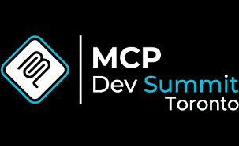
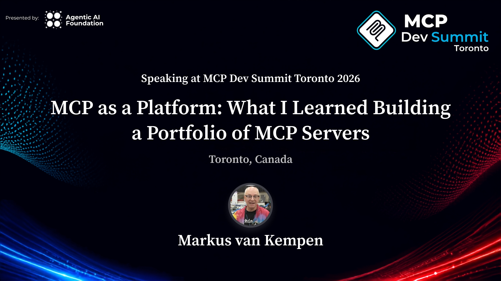

MCP Dev Summit Toronto · Linux Foundation
Markus van Kempen · Executive Architect & Venture Capitalist in Residence, IBM

The deck, PDF, and demo walkthrough stay offline until the day before the session. Come back on 4 October, or start at the official session page.
mvankempen@ca.ibm.com
· markus.van.kempen@gmail.com
Personal open-source talk materials. Not an IBM product. Not an official Linux Foundation repository.